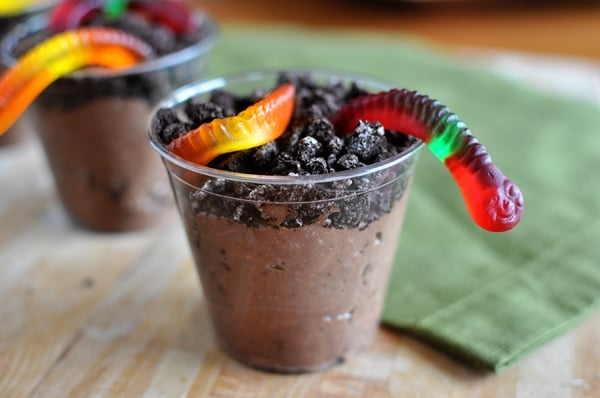

Index | Dirt Cups
Dirt Cups

Individual Pudding Dirt Cups
Ingredients
- 2 cups cold milk
- 1 (3.9-ounce) package instant chocolate pudding (4 serving size)
- 8 ounces frozen whipped topping, thawed
- 1 1/2 cups crushed chocolate sandwich cookies (about 16), divided
- 20 gummy worms
Steps to Make It
- Gather the ingredients.
- Whisk together milk and instant pudding for 2 minutes, until pudding is completely dissolved. Let stand 5 minutes to thicken.
- Stir in frozen whipped topping and 1/2 cup of crushed cookies.
- Spoon into 10 individual cups.
- Sprinkle remaining crushed cookies over pudding mixture. Top each cup with 2 gummy worms. Chill for at least 60 minutes or until ready to serve.